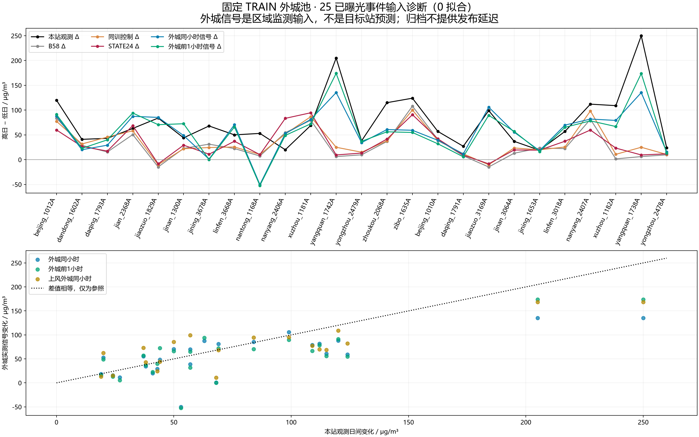

0拟合 · 847个固定TRAIN参考站 · 排除目标整座城市 · 25已曝光事件
完整短报告 · 预锁规则 · 50日期输入 · 25对差值 · 每个外城源值 · 原始ZIP索引
前1小时区域信号覆盖50/50日期、24/25对方向为正；不能直接当目标站预测。上风信号缺少5个日期，不补造。归档发布延迟未知。

| pair_id | observed_pm25_delta | B58_delta | EVENT_RETRAIN_CONTROL_delta | EVENT_STATE24_delta | regional_PM_lag0_delta | regional_PM_lag1_delta | upwind_PM_lag1_delta |
|---|---|---|---|---|---|---|---|
| S05_jiaozuo_1829A | 84.0 | -14.769 | -10.303 | -8.452 | 85.238 | 70.581 | 87.482 |
| S09_nantong_1168A | 53.0 | 7.407 | 10.457 | 10.139 | -50.176 | -52.092 | NaN |
| S13_yangquan_1742A | 205.0 | 6.186 | 25.031 | 9.528 | 135.389 | 174.071 | 214.629 |
| S22_jiaozuo_3169A | 99.0 | -14.769 | -10.303 | -8.452 | 105.957 | 89.466 | 88.160 |
| S29_yangquan_1738A | 250.0 | 6.186 | 25.031 | 9.528 | 135.220 | 173.824 | 214.663 |
差值RMSE为输入信号与目标变化之间的描述，不是新模型精度；样本已曝光且有共享城市事件。
| signal | date_covered | pairs_covered | positive_delta_pairs | mean_delta | delta_rmse_descriptive | delta_correlation_descriptive |
|---|---|---|---|---|---|---|
| observed_pm25 | 50 | 25 | 25 | 77.120 | 0.000 | 1.000 |
| B58 | 50 | 25 | 23 | 29.354 | 78.042 | 0.049 |
| EVENT_RETRAIN_CONTROL | 50 | 25 | 23 | 34.220 | 72.290 | 0.155 |
| EVENT_STATE24 | 50 | 25 | 23 | 32.319 | 77.283 | -0.041 |
| regional_PM_lag0 | 50 | 25 | 24 | 56.633 | 43.446 | 0.718 |
| regional_PM_lag1 | 50 | 25 | 24 | 57.854 | 39.768 | 0.779 |
| upwind_PM_lag0 | 45 | 20 | 20 | 73.650 | 35.230 | 0.829 |
| upwind_PM_lag1 | 45 | 20 | 20 | 80.770 | 34.194 | 0.823 |
固定 TRAIN 外城观测：零拟合输入诊断完成
新信息确实存在：前日状态没有跟上焦作/阳泉突增，但附近外城前1小时已有实际污染突增。847个冻结TRAIN站、199城，全局排除25事件站；每目标排除整座本城，按几何预锁300km内最近5外城。该池不包含CITY/STATION保留站，邻居不按事件结果挑选。
50日期全部有至少2个外城；区域前1小时信号覆盖25/25对，24对增向。固定上风±60°、风速≥1m/s信号覆盖45/50日期与20/25对，未给缺测替换邻居。
焦作1829A外城前1小时：晋城24→132、郑州22→97；区域信号Δ=70.58，而本站Δ=84。
阳泉1742A外城前1小时：晋中25.5→226、太原28→280、忻州45→238；区域信号Δ=174.07，而本站Δ=205。
有不利例：南通本站Δ=53.0，外城前1小时Δ=-52.091537、同小时Δ=-50.175915。外城变化不能直接回填为目标预测。
以下差值RMSE只是外城输入与目标事件变化的描述性比较，不是一个已训练模型的精度；25对早已曝光，部分共享城市/事件，不能当25个独立盲测。
signal date_covered pairs_covered positive_delta_pairs mean_delta delta_rmse_descriptive delta_correlation_descriptive
observed_pm25 50 25 25 77.120000 0.000000 1.000000
B58 50 25 23 29.353791 78.041705 0.048990
EVENT_RETRAIN_CONTROL 50 25 23 34.220174 72.290262 0.154945
EVENT_STATE24 50 25 23 32.319189 77.283079 -0.041232
regional_PM_lag0 50 25 24 56.632672 43.446236 0.718109
regional_PM_lag1 50 25 24 57.854151 39.768358 0.778961
upwind_PM_lag0 45 20 20 73.650353 35.229816 0.828969
upwind_PM_lag1 45 20 20 80.770479 34.193589 0.822722
关键逐对数据：
pair_id observed_pm25_delta B58_delta EVENT_RETRAIN_CONTROL_delta EVENT_STATE24_delta regional_PM_lag0_delta regional_PM_lag1_delta upwind_PM_lag1_delta
S05_jiaozuo_1829A 84.0 -14.768661 -10.303219 -8.452286 85.237872 70.580583 87.482420
S09_nantong_1168A 53.0 7.406757 10.457476 10.139309 -50.175915 -52.091537 NaN
S13_yangquan_1742A 205.0 6.186009 25.030964 9.528139 135.388592 174.071080 214.629249
S22_jiaozuo_3169A 99.0 -14.768661 -10.303219 -8.452286 105.956984 89.465855 88.160095
S29_yangquan_1738A 250.0 6.186009 25.030964 9.528139 135.219615 173.824120 214.662842
时间可用性：原始CNEMC日文件 type=PM2.5、北京时间标注小时。只使用冻结TRAIN参考站的原始数值，负值/缺测剔除，未插值。归档没有发布时刻，同小时只能在该小时资料发布后使用；前1小时是更合理的延迟方案代理，仍不能保证过境时已发布齐。上风判断使用目标当前气象风向，前1小时观测也沿用该风向。
建议一个固定候选（待root批准，不在本诊断中拟合）：旧13特征＋外城前1小时PM、上风前1小时PM及两个有效城市数；与已有同训43,658行控制比较，仅一次固定HGB，不扫描距离、风角或邻居数。TRAIN和预测按同一池、排本城、同一函数构造；缺失按TRAIN中位数+标记。沿用原B58的已知训练重叠需继续披露。
该候选是区域地面监测融合背景；即使有效，也不代表10m光学或屋顶纹理改进。与零均值局地细节组合时只改变场均值。
文件：PLAN.txt为读PM前锁定规则；REFERENCE_POOL.csv/NEIGHBORS.csv/LOCK.json固定池和几何；RAW_CITY_HOURLY.csv保留确切ZIP/member/小时；REFERENCE_DETAILS.csv保留每场每外城数值；DATE_SIGNALS.csv、EVENT_PAIR_SIGNALS.csv为完整结果。fit_count=0。